RVHO
Reagent Volume High for Oil
Fusion RVHO Flag contains these sections:
Technical Support
Possible Root Cause
Tips.
TS Troubleshooting
Once a Fusion oil pack gets an RVHO flag, the rest of the test orders of that pack will be flagged with RVHO regardless of tips used. This is to prevent customers from refilling reagents themselves.
Customer needs to load a new oil pack and discard the one flagged with RVHO.
Why does it not change to the other oil pack?
From Matt B in sw:
Given the way that the Panther SW has been built, it’s difficult for the system to reschedule tests that are already in process. The system plans out the entire process for each MTU and can’t immediately change to a different fluid or reagent if a problem with that fluid or reagent is discovered. So, if a Fusion pack is found to be faulty then unfortunately all MTUs that were already to use that pack remain scheduled to that pack. There is a complaint opened against the way this works but again, given how the SW already works, it’s not an easy update and has not been prioritized.
Field Service
RVHO – Lookup Oil Pack
Issue:
Customer reported new RVHO after getting new tips, but did not replace oil pack between 2/15 and 2/22.
Search:
Higher liquid level detected by universal reagent.
Same DBID, same oil barcode.
2021-02-15 12:14:06,612|[SCPMThread]|SidecarReagentsManager|SidecarInv|Info|Normal|ScRM.HandleUniversalReagentLldResponse: Higher liquid level detected by universal reagent 'UniversalReagentOilA'. Difference 8585 microliters. Status: (3128,000227422515012200919,2,0,00,02,Oil,Valid,InUse,670,671,0,0,354).
2021-02-22 16:16:07,365|[SCPMThread]|SidecarReagentsManager|SidecarInv|Info|Normal|ScRM.HandleUniversalReagentLldResponse: Higher liquid level detected by universal reagent 'UniversalReagentOilA'. Difference 8552 microliters. Status: (3128,000227422515012200919,2,0,00,02,Oil,Valid,InUse,646,650,0,0,354).
Resolution:
Oil pack must be replaced if RVHO caused by tips. Oil pack can be reused if caused by pipettor.
RVHO – Why Software Cannot Reschedule Tests
Per SW team:
"Given the way that the Panther SW has been built, it’s difficult for the system to reschedule tests that are already in process. The system plans out the entire process for each MTU and can’t immediately change to a different fluid or reagent if a problem with that fluid or reagent is discovered. So, if a Fusion pack is found to be faulty then unfortunately all MTUs that were already to use that pack remain scheduled to that pack. There is a complaint opened against the way this works but again, given how the SW already works, it’s not an easy update and has not been prioritized."
RVHO Due to Tecan *117 Tips
Fusion Pipettor Oil uses Barometric.
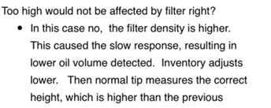
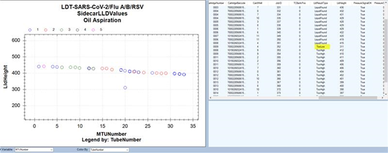
1/13: LLD values bounce around a bit. The oil aspiration/dispense pressure suggests extra resistance to flow.
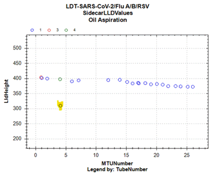
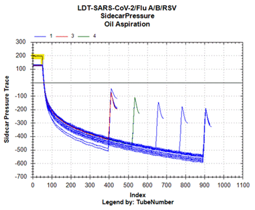
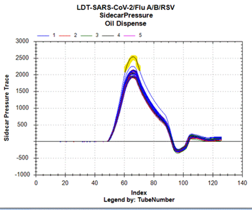
1/17:
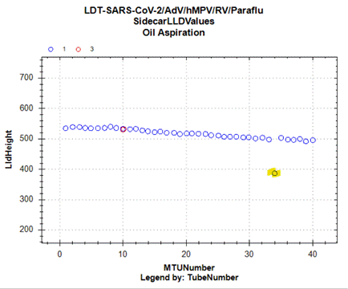
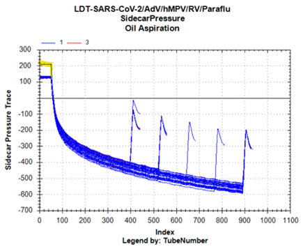
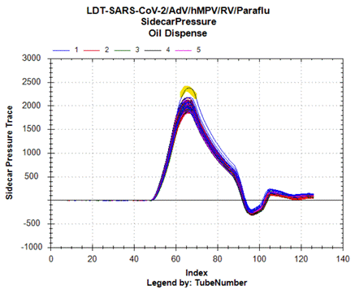
Comparing oil against another instrument:
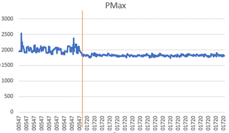
Comparing recon fluid dispense against another instrument – LDT-SARS-CoV2:
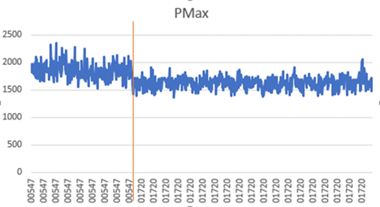
RVHO with RDFO Due to Pipettor Sticky Plunger
This looks like a real pipettor problem. (Replace pip.)
Two flags…
-
RVHO: oil too high measurement is truly detecting a liquid level above actual fluid level.
- Level sense detected above – no oil aspirated, will get RDFO flag.
- Level sense detected below fluid level – oil aspirated, usually no flag as oil is still aspirated.
-
RDFO: Oil aspiration/dispense curves show no oil aspirated/dispensed.
Note: The oil pack can be reused as a new pipettor will find correct oil level.
Early trigger from LLD values, close to entry point into oil pack.
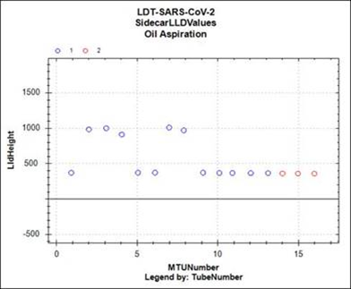
Inspecting pressure trace curve (zoom in!).
450-500, the plunger is sticking a bit – highlighted in green.
Red circled is correct fluid height.
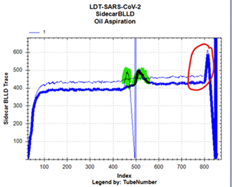
No flag on aspirate as we turn off process control here.
But flat line shows air.
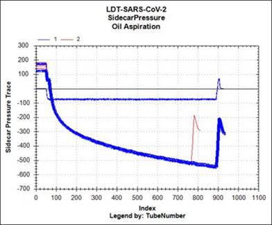
RDFO have the Pmax values under 1000.
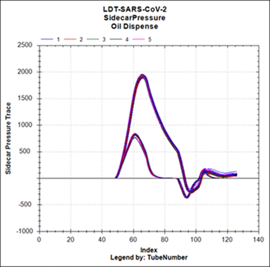
 button at the top of the page to send feedback, comments, or change requests.
button at the top of the page to send feedback, comments, or change requests.